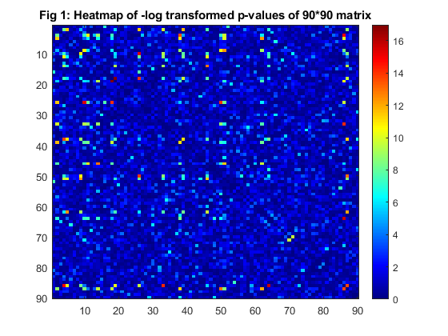
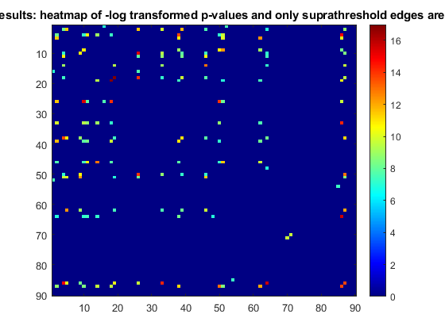
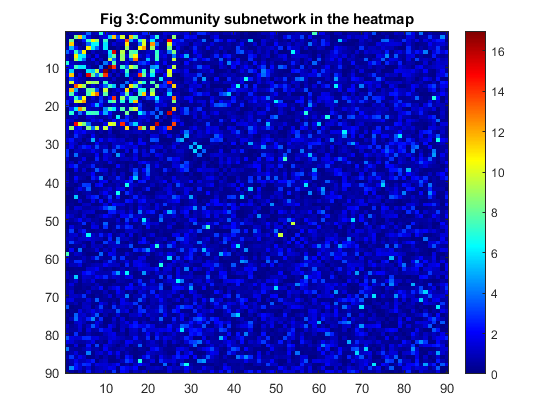
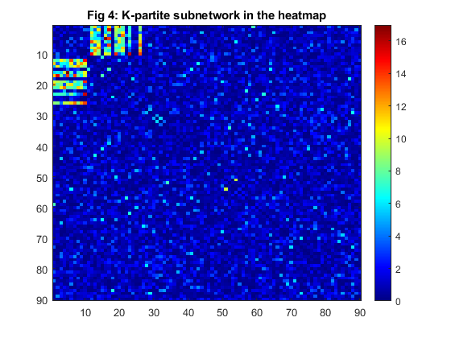

GLEN network detection and testing
Network object oriented statistics method is a new appraoch to detect and test hidden phenotype related connectivity patterns at the "network" level.
Contents
Step 1: Community detection
load('data.mat') % load the connectivity data for 60 subjects which include 30 cases and % 30 matched controls. The first 90 AAL regions are used, and there are 4005 (90*(90-1)/2) edges % for each subject. Each edge is continuous metric/number, e.g. Fisher's Z transformed correlation coefficients. %Step 1.1 two sample test on each edge [h1,p1]=ttest2(casedata_cor,ctrldata_cor); % here we simply use t-tests, but nonparametric tests could be used as well. %p1 is a vector of testing p-values W1=squareform(-log(p1)); % -log tranfom of p-values, thus a larger value indicates more group-wise difference. % Input data:the heatmap of the input data is shown beneath the code imagesc(W1);colormap jet;colorbar; title('Fig 1: Heatmap of -log transformed p-values of 90*90 matrix'); snapnow; % As comparison, we show the FDR multiple test adjustment result [FDR, Q] = mafdr(p1); p1_fdr=p1; p1_fdr(Q>0.05)=1; W1_fdr=squareform(-log(p1_fdr)); imagesc(W1_fdr);colormap jet;colorbar; title('Fig 2:FDR results: heatmap of -log transformed p-values and only suprathreshold edges are kept'); snapnow; % The non-zero (not blue) points show differentially expressed % connectivity edges by using FDR, and we note the results are % scattered and show not topological pattern. % Step 1.2 Rather than using FDR, we aim to detect hidden disease related commuity subnetworks % SICERS is a function aims detects the hidden comuunity subnetworks, [Cindx,CID,Clist]=SICERS_A(squareform(W1),0.05,0,10); %Detected structure imagesc(W1(Clist,Clist));colormap jet;colorbar; title('Fig 3:Community subnetwork in the heatmap'); snapnow %Detected community shown % Note this figure only shuffles node order of the first figure %  
Step 2: Testing community subnetwork
The figure below shows the community detected by the SICERS_A function, and this part uses group label permutation test to test the significance of the community. The output P_SICERS shows the significance.
[signodeGEP,GEPstat,P_SICERS]=GLP_newstats_testonly(casedata_cor',ctrldata_cor',Cindx,CID,100);
P_SICERS
P_SICERS =
0
Step 3: Refine detected community subnetwork, (refined topological structure)
Given that the community detected in the previous part is significant(P_SICERS<0.05), we further check if there exist any K-partite structure in it. The figure below shows the structure we detected.
W1_comm=W1(signodeGEP{1,1},signodeGEP{1,1}); %If the first community has k-partite structure
[Cindx_kpar,CID_kpar,Clist_kpar,T]=kpartite(squareform(W1_comm),0.05,0,10);
figure;imagesc(W1_comm(Clist_kpar,Clist_kpar)) %Kpartite in community shown
%
W1_reorder=W1(Clist,Clist);
comm_size=length(find(Cindx==CID(1)));
W1_reorder(1:comm_size,1:comm_size)=W1_comm(Clist_kpar,Clist_kpar);
imagesc(W1_reorder);colormap jet;colorbar;
title('Fig 4: K-partite subnetwork in the heatmap');
snapnow %Detected community shown
% Note this figure only shuffles node order of the first figure
snapnow;
%Kpartite in overall structure
%
 Step 4: Tesing refined topological structure
KPGD algorithm is applied here to test the significance of the refined topology (here, k-partite for example) we find in the first section, and P_KPGD shows its signficance.
sig_network=W1(signodeGEP{1,1},signodeGEP{1,1});
signode_mark=squareform(zeros(size(casedata_cor,2),1));
signode_mark(signodeGEP{1,1},signodeGEP{1,1})=1;
for i=1:length(signodeGEP{1,1})
signode_mark(signodeGEP{1,1}(i),signodeGEP{1,1}(i))=0;
end
signode_mark=squareform(signode_mark);
%
sigedge_case=casedata_cor(:,signode_mark==1);
sigedge_ctrl=ctrldata_cor(:,signode_mark==1);
%
[sigKPGD,GLPKPGD,P_KPGD]=GEP_KPGD_testonly(sigedge_case',sigedge_ctrl',Cindx_kpar,CID_kpar,0.05,100);
P_KPGD
%p-value<0.01, that indicates that k-partite topological structure is valid (within the community structure)
P_KPGD =
0
Summary: we detected a hidden disease related subnetwork with oraganized topological structure (k-partite).
%The statistical tests are performed at the network level to provide %formal statistical testing inference on the detected hidden and %differentially expressed connectivity subnetworks.